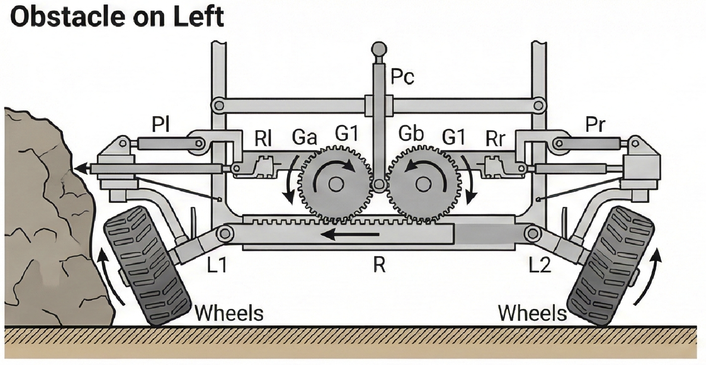
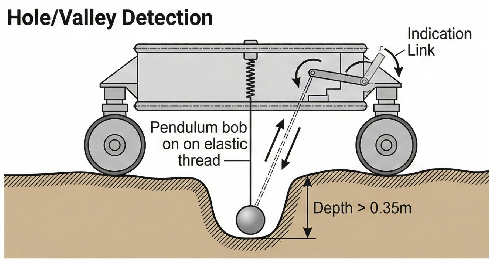
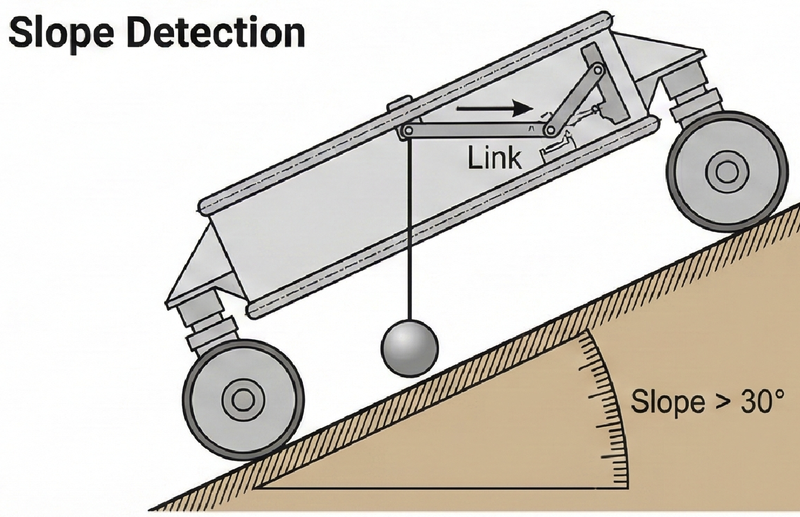

Challenge Overview:Imagine a world hot enough to turn lead into a puddle, where the atmospheric pressure can crush a nuclear-powered submarine. Now imagine sending a rover to explore that world. Venus, ancient sister of Earth with a planetary environment just this side of hellish, has been visited by a handful of probes since the early days of space flight. Of the many missions to our celestial neighbor, only about a dozen have made contact with the surface of the planet. The longest-lived landers only managed to function for a couple of hours before succumbing to the relentlessly oppressive heat and pressure.
Despite the punishing conditions, previous missions to Venus have nevertheless delivered important information, such as:
→ Surface temperature: in excess of 450°C → Surface pressure: 92 times that of Earth → Wind speeds: 0.3 – 1.3 meters per second; Due to the extreme pressure, this low wind speed feels almost like gale-force winds here on Earth → Length of Venusian day: 116 Earth days
NASA's Jet Propulsion Laboratory (JPL), under a grant from the NASA Innovative Advanced Concepts (NIAC) program, is studying a mission concept to return to the surface of Venus, known as the Automaton Rover for Extreme Environments (AREE), something not accomplished since the Soviet Vega 2 landed in 1985. Current, state-of-the-art, military-grade electronics fail at approximately 125°C, so mission scientists at JPL have taken their design cues from a different source: automatons and clockwork operations.
Powered by wind, the AREE mission concept is intended to spend months, not minutes, exploring the landscape of our sister world. Built of advanced alloys, AREE will be able to collect valuable long-term longitudinal scientific data utilizing both indirect and direct sensors. As the rover explores the surface of Venus, collecting and relaying data to an orbiter overhead, it must also detect obstacles in its path like rocks, crevices, and steep terrain.
To assist AREE on its groundbreaking mission concept, JPL needs an equally groundbreaking obstacle avoidance sensor, one that does not rely on vulnerable electronic systems. For that reason, JPL is turning to the global community of innovators and inventors to design this novel avoidance sensor for AREE. This sensor will be the primary mechanism by which the potential rover would detect and navigates through dangerous situations during its operational life.
Project Overview:VR-OAS is an obstacle avoidance system for the Venusian rover. It detects obstacles and actuates links to generate a relevant response. The proposed design is fully mechanical and can be divided into two modules: the Obstacle Avoidance Module and the Hole/Valley/Slope Detection Module.

Obstacle Avoidance Module:
Construction:
→ The obstacle avoidance module consists of three push rods or pins. → Out of the three pins, two pins (Pl and Pr) are used for the detection of the obstacle to the left and the right of the rover respectively. The third pin (Pc) which is mounted on the center is extended slightly forward in comparison to the two pins and is used when the obstacle obstructs the path of the rover from the center. → The other ends of the pins Pl and Pr are connected with cranks and connecting rods of the toggle mechanism. The connecting rods at the end are connected to racks (Rl and Rr). → The racks R1 and R2 are in mesh with the gears G1 and G2. → These gears are in mesh with a compound gear system Ga and Gb which in turn are in mesh with the main rack R. → The ends of this rack are mounted with bell crank levers (L1 and L2) the other joints of which are connected with the wheels of the rover. → Pin Pc is mounted with some eccentricity on the gear Ge which is in mesh with the rack R.
Working:
→ When the path of the rover is obstructed from the right, the right pin Pr gets pressed. This push on the pin actuates the toggle mechanism which in turn moves the rack Rr horizontally. Thus making the gears to rotate. The rotation of the gear would move the rack R and thus this would help the wheel to steer because of the moment of the bell crank lever. → Similar event happens when the path of the rover is obstructed from the left and the left link is pressed. → When the path of the rover is obstructed from the center, the extended pin Pc gets pressed. This pin Pc rotates the gear Ge and thus the rack R which is in mesh with the gear Ge moves. The motion of the rack helps to steer the wheel. → Now as the obstacle is detected, the rover would move in the reverse direction and the mechanism would help the vehicle to turn. This will generate a combined reverse + turning motion bringing the vehicle away from the obstacles and finding new path forward.
Hole/Valley/Slope Detection Module:
Mechanism for the detection of Holes/Valleys:
→ In order to detect holes and valleys having depths greater than 0.35 meters we are proposing a simple suspended pendulum mechanism. This mechanism consists of an elastic thread at the end of which a pendulum is mounted. The length of the thread is slightly more than 0.35 meters. → As a result when the rover moves ahead the pendulum bob would just freely slide with the ground keeping the thread loose. When the hole or valley having a depth more than 0.35 meters is encountered the pendulum would itself move down and the string would get tensed. → The other end of the thread is connected with the link which triggers an indication link on the rover.
Mechanism for the detection of slope greater than 30 degrees:
→ In order to indicate the slope greater than thirty degrees a pendulum is used. The pendulum is freely suspended, so when the rover moves uphill or downhill on the slope, the chassis of the rover becomes parallel to the slope and so the rod of the pendulum has a relative motion with respect to the chassis and as a result angle of the slope can be indicated. → When the slope is thirty degrees or more a link gets pressed, triggering the appropriate response from the rover's navigation system.
Significance:While the mission to the surface of Venus may be years off, the development of a suitably robust rover sensor will strengthen the case for returning to Venus with a rover, something that has never been attempted before. JPL has issued this challenge to the global community because the rover must have the ability to successfully navigate in such a demanding environment in order to qualify for additional developmental funding.